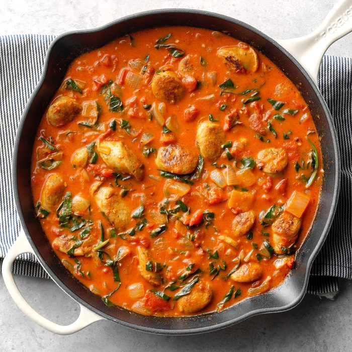

Sausage-Tomatoe Coconut Curry

A 30 minutes one pan dish
I'm a big fan of leaving as few dishes as possible to clean after preparing dinner. With this recipe you can have dinner ready in about 30 minutes and you're left with one pan to wash.
Ingredients
- 2 tbsp olive oil
- your favorite type of sausage
- 1 medium onion, chopped
- 2 tbsp red curry past
- 1 garlic clove, mincee
- 1 can fire-roasted diced tomatoes, (14 oz) undrained
- 1 can coconut milk (14 oz)
- 2 cups chopped spinach
- 1/4 teaspoon salt
- 1/8 teaspoon pepper
- 3 cups cooked rice
Steps
- In a large skillet, heat oil over medium-high heat. Add sausage and onion; stir until onion is tender and sausage is browned. Add curry paste, and garlic
- Stir in tomatoes and coconut milk. Bring to boil; reduce heat and simmer uncovered until sauce begins to thicken. Add spinach, salt and pepper; cook and stir until spinach wilts. Serve over rice.